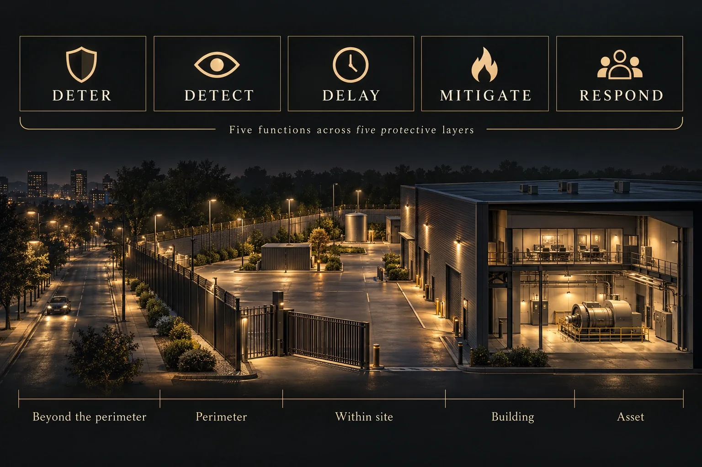

Establish
Agree important assets, consequences and threats relevant to the organisation. Separate evidence from assumptions so protective requirements and recommendations have a clear basis.
Methodology
Published NPSA guidance informs the protective framework. Palisade applies it to your assets, credible threats and operational requirements.
Palisade / Winchester · UK wide
Protecting Your Assets
Consider physical, personnel and cyber dependencies together. The five functions below are supported by security planning.

Discourage hostile action.
Recognise and verify a threat; initiate action.
Create time for protective intervention.
Reduce consequences for people and operations.
Prevent the adversary achieving their objective.
Across the protective layers
These are assessment areas, not mandatory nested barriers. Exposure and essential dependencies can sit outside the main site.
The descriptions are Palisade’s interpretation of the published framework.
Generic illustration of connected protective layers.
Public information, external approaches, off-site assets and essential dependencies.
Boundaries and access points; detection, delay and response working together.
Internal movement, restricted areas and situational awareness.
Entry, zoning and sensitive functions or information.
Protection of the critical asset itself, including isolated assets.
Agree important assets, consequences and threats relevant to the organisation. Separate evidence from assumptions so protective requirements and recommendations have a clear basis.
Review vulnerabilities and how controls work with procedures, responsibilities and essential dependencies. Consider how the site actually functions; assurance should answer defined questions about those connections.
Set the required protective outcome and prioritise recommendations.
Exercise or test where evidence is needed; follow through on remediation.
NPSA: Protecting Your Assets · NPSA: Operational Requirements
Use of published guidance does not imply NPSA accreditation or endorsement.